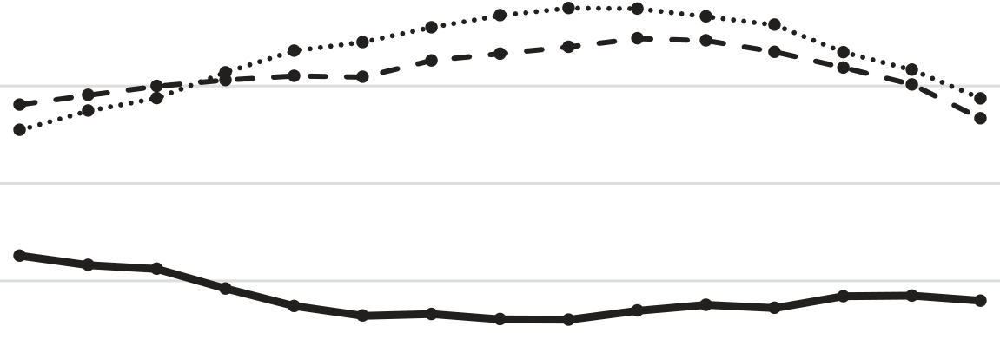
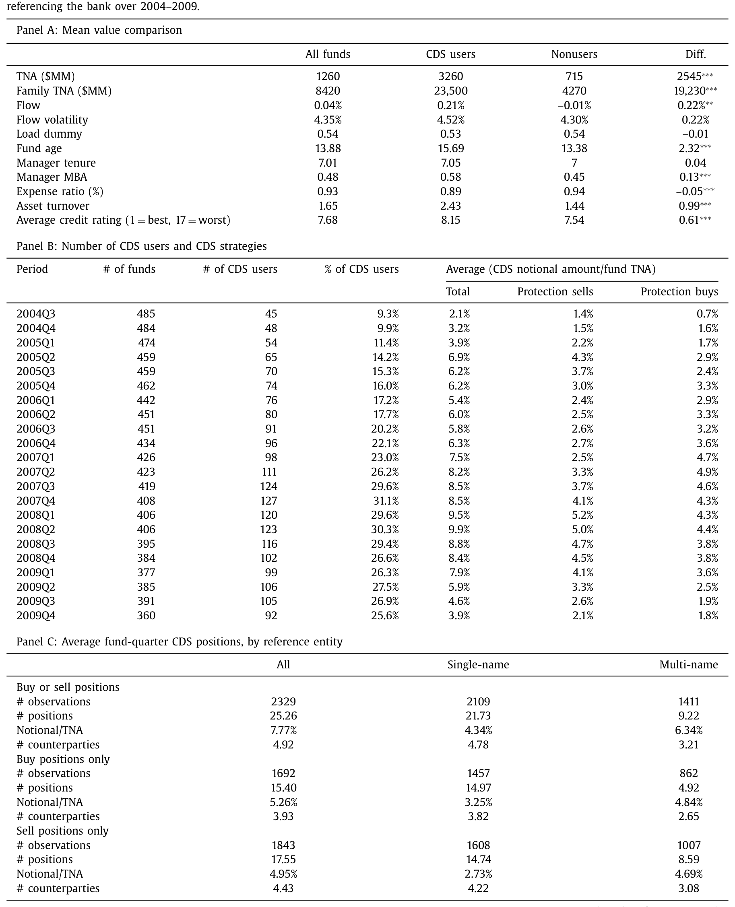
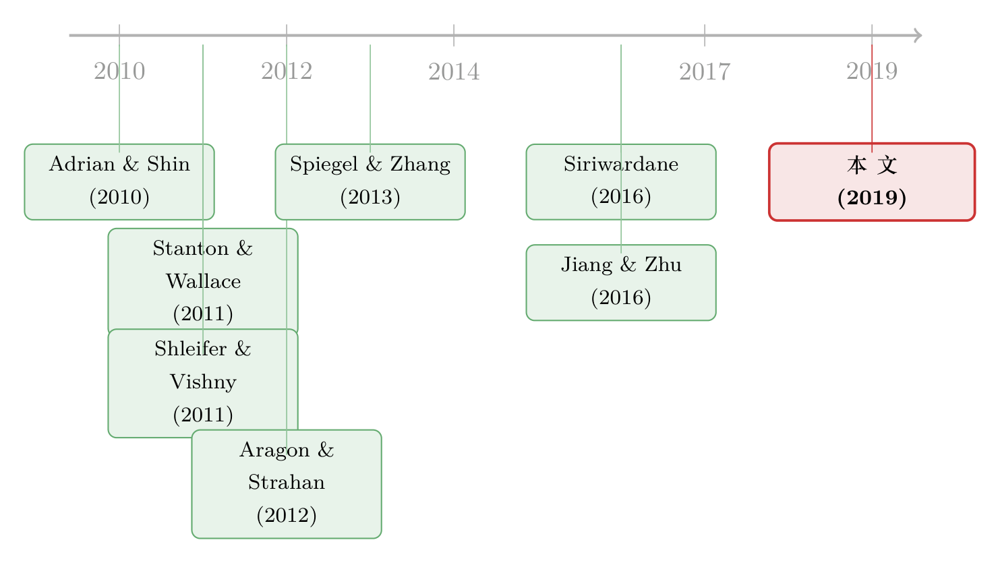

危机里谁在「逆向接盘」？——债券基金、信用违约互换与一笔藏着风险的流动性溢价
本文读的是 Aragon, Li & Qian (2019, Journal of Financial Economics)：2007–2008 危机里，当所有人都在抢着买「信用保险」的时候，公司债共同基金却反向加大了卖出信用保护——它们主要卖的是多名称指数 CDS，卖给那些正陷入财务困境的交易商。事后看，这是一笔有溢价的流动性提供（卖得越多、危机后业绩越好）；但代价是，把投资者悄悄绑在了交易对手的违约风险上——以雷曼为对手方的基金，在雷曼破产后的两周里收益骤降约 −2%。
1 引言：火灾现场里，谁还在往里走？
危机的标准剧本，我们都熟悉：资产价格下跌，高杠杆机构净值缩水，于是被迫去杠杆——抛售资产、削减风险敞口。Shleifer 和 Vishny (2011) 把这叫「火线甩卖 (fire sales)」：所有人都想同时离场，市场承接风险的能力被抽干，价格于是跌穿基本面。
但任何一笔交易都有两端。如果说危机里有一群人在「跑」，那么逻辑上必然有另一群人站在对面「接」。问题是：谁来接？
在 信用违约互换 (credit default swap, CDS) 这个市场里，这个问题尤其尖锐。CDS 的本质是一份「信用保险」：买方定期付保费，一旦参考实体违约，卖方赔付。危机里，高杠杆的 互换交易商 (swap dealers)——也就是大投行——净值暴跌，按 Adrian 和 Shin (2010) 的「杠杆顺周期」逻辑，它们会主动削减风险，办法之一就是在 CDS 市场上少卖、多买信用保护。换句话说，危机里交易商对「信用保险」的需求是激增的。
一组数字先把舞台搭好：本文样本里，互换交易商五年期高级债的 CDS 中位利差，从 2007Q2 的 20 个基点一路飙到 2008Q4 的 140 个基点——这是市场在给这些「保险公司」自己的违约风险定价。Citigroup 和 Merrill Lynch 在 2007 年秋就分别报出 $23.8 亿和 $24.7 亿的巨亏。
需求暴涨、价格高企，而传统的供给方（大投行、单线债券保险商 AIG/monoline）自己都泥菩萨过江。于是 Stanton 和 Wallace (2011) 发现，危机里 ABX 指数 CDS 的价格高得离谱，隐含的违约率「不合理地高」——这正是「保险卖方不够、买方太多」时该出现的溢价。
那么，这笔溢价，最后被谁赚走了？
本文给出的答案，初看相当反常识：是一群你最不会想到的玩家——公司债共同基金。
2 一个反常识的角色：为什么偏偏是债券基金
要理解为什么是它们，关键在于一个被大多数人忽略的制度细节：杠杆。
互换交易商和债券保险商之所以在危机里被迫收缩，是因为它们杠杆高、对资产价格波动极其敏感。而开放式共同基金不一样——它们受 1940 年《投资公司法》(Investment Company Act of 1940) 约束，只能向银行借款，且必须维持 300% 的资产覆盖率，也就是杠杆上限只有 1.5:1。很多基金干脆完全不用杠杆 (Almazan et al., 2004)。
这个数字有多低？作为对照，危机前对冲基金的典型杠杆约为 2.5，投资银行约为 10。
于是逻辑链条就清晰了：正因为债券基金几乎不加杠杆，它们在危机里受资产价格冲击最小、最不受资本约束。当别人都被迫去杠杆、争着买保险时，这些「钱袋子还鼓着」的基金，恰好有能力反向操作——卖出信用保护、收取那笔高企的溢价。在这个意义上，它们扮演了 流动性提供者 (liquidity provider) 的角色。
这是全文反复打磨的一个核心：危机里的流动性，是由一个「不受约束」的边缘玩家逆向提供的。而它的整个故事——为什么是它、卖的是什么、卖给谁、赚到了什么、又承担了什么风险——全都围着这一点展开。
3 识别策略：用「持仓显微镜」看见流动性提供
这类「谁在提供流动性」的问题，过去难做，难就难在看不见持仓。你能看到 CDS 价格异常，却看不到是谁在异常价格上接盘。
本文最硬核的一步，是手工从基金按季度提交给 SEC 的监管披露文件里，一笔一笔地抠出每只基金的 CDS 持仓明细。这不是 Morningstar 现成提供的数据，作者是逐份文件去读、去录入的。每一笔持仓都带着：合约类型（买方还是卖方）、参考实体或指数、名义本金、未实现损益、到期日，以及——交易对手交易商的名字。
最后这一项至关重要。正是因为能看到「对手是谁」，本文才能把「流动性提供」和「交易对手风险」这两条线同时钉死在数据上。
围绕第 2 节那个核心，作者把它拆成了一串可检验的预测（注意：这是一篇假设驱动的实证文章，没有结构模型，而是把直觉翻译成一组并列假设）：
- 预测 1a / 1b：危机里债券基金加大了卖出信用保护，且主要是多名称 (multi-name) 指数 CDS，而非单名称 (single-name) CDS。
- 预测 2a / 2b：卖得更多的，是投资者资本更稳定的基金（规模更大、经理任期更长）；而它们更倾向于卖给财务困境更深的交易商。
- 预测 3：危机里卖出多名称保护越多，危机后业绩越好。
- 预测 4a / 4b：卖保护让基金更暴露于信用市场风险；尤其，以雷曼为交易对手的基金，在雷曼破产后会出现更差的业绩和异常的资金流出。
为什么强调「多名称」？因为它直接服务于核心故事。本文样本里，交易商平均在 47 个不同的单名称参考实体上持有头寸——说明它们高度分散，真正怕的是系统性、不可分散的市场风险，而不是某家公司单独违约。多名称指数 CDS（如 ABX.HE）正是对冲这种系统性信用风险的天然工具（危机里基金卖出的多名称头寸中，19% 是 ABX CDS）。所以「卖的是多名称」本身，就是「交易商在对冲市场风险、基金在承接市场风险」这个机制的指纹。
这一步的巧妙在于：它不是靠一个外生冲击做断点或双重差分，而是靠持仓数据的颗粒度——把「谁、卖什么、卖给谁」三件事在同一笔合约上对齐，让流动性提供的机制「自证」。识别的可信度，主要来自时间维度的对比（危机前 vs. 危机中）和横截面的异质性（稳定基金 vs. 不稳定基金、困境交易商 vs. 健康交易商）。
图 2 把「主要是多名称」这件事画得一清二楚：危机里净卖出的上升，几乎全来自多名称 CDS 这一侧，单名称那一侧几乎是平的。

Figure 2: Net selling of credit protection by bond funds, single-name versus multi-name CDS. Panels A and B plot the eight-quarter rolling average of
4 数据：538 只基金，58,824 笔 CDS 持仓
把数据交代清楚，是为了让读者知道这台「显微镜」的分辨率有多高。
- 基金宇宙：以 Morningstar 数据库中 2004 年 6 月仍存续的、美国本土开放式固定收益基金为起点，剔除货币市场基金、指数基金，以及专注市政债、政府债、外国债的基金，剩下
538只主动管理的开放式国内债券基金。 - CDS 持仓：手工从 SEC 季度文件采集，最终覆盖
194只基金的58,824笔 CDS 持仓。 - 资金流：用 CRSP 免存活偏误共同基金数据库算月度资金流（
2,060个份额类别中93.3%成功匹配）；雷曼事件研究则用 TrimTabs 的日频资金流与收益数据（2008 年 8–9 月）。 - 风险敞口基准：Bloomberg Barclays 美国综合债券指数（投资级）与美国公司高收益指数，用来估计基金对信用市场风险的暴露。
- 样本期：CDS 持仓覆盖 2004Q3–2009Q4。沿用 Ben-David et al. (2012) 的划分，把危机前期定为 2004Q3–2007Q2（牛市、CDS 使用扩张期），危机期定为 2007Q3–2009Q1（始于 2007 年夏两只贝尔斯登次贷对冲基金的崩盘，止于市场触底之后）。
Table 1 先做了个「体检」：CDS 使用者 vs. 非使用者。结论是——使用者往往更大、且 MBA 背景的经理更多。这跟「能玩 CDS 的是更成熟、更有能力的基金」的直觉一致，也为后面「稳定基金卖得更多」埋下伏笔。

Table 1
净卖出的定义本身很朴素，但值得写清楚，因为全文的因变量都建立在它之上：
$$ \text{NetSell}_{i,t} = \frac{\text{Sell}_{i,t} - \text{Buy}_{i,t}}{\text{TNA}_{i,t}} $$
其中 \(\text{Sell}\) 与 \(\text{Buy}\) 分别是基金 \(i\) 在季度 \(t\) 卖出与买入信用保护的名义本金，用同期总净资产 \(\text{TNA}\) 标准化。样本只保留至少持有一笔 CDS 头寸的基金。
5 主要结果：溢价、稳定性，与一记反转
首先，预测 1a 成立得相当干净。整个危机期间，债券基金净卖出信用保护的规模，从 2007Q2 的约 −1%（净买入）稳步爬升到 2009Q1 的约 +1%（净卖出），以基金总资产计。而且，这个上升主要来自卖出端的增加，等价地说，就是交易商在向基金买入保护。剧本对上了：交易商在去风险，基金在接风险。
接着，一个自然的问题是：是哪些基金在接？预测 2a 给出的答案颇具反差。一般直觉里，卖 CDS 是「高风险动作」，似乎该是激进的小基金在博。但数据相反——危机里净卖出更多的，是规模更大、经理任期更长的基金，也就是投资者资本更稳定、流动性风险更低的那一类。原因不难想：卖 CDS 意味着一旦信用市场恶化就可能巨亏，若此时投资者夺路赎回，基金就得被迫「流动性驱动的甩卖」。只有资金端稳的基金，才敢、也才能扛住这份风险，等到危机后市场回归、把溢价收入囊中——这背后是 Spiegel 和 Zhang (2013) 所刻画的「低资金流-业绩敏感性」。
然后，预测 2b：卖给谁？数据显示，财务困境更深的交易商更积极地从基金买保护。也就是说，基金把更多的保护卖给了「信用质量更差、但更愿意付溢价」的对手。这正是流动性提供故事的对称面——越是急着买保险的人，越愿意出高价。
但真正关键的一步在于预测 3——溢价究竟落袋了吗？答案是肯定的，而且量级可观：危机期间每多卖出相当于基金资产 10% 的多名称 CDS 名义本金，对应危机后（2009Q2–2009Q4）3.14% 的异常业绩提升。 注意这是个经过风险调整的口径——它已经剔除了同风格类别、同投资级/高收益信用暴露、同费率基金的收益。换句话说，这 3.14% 不是踩对了贝塔，而是实打实的、危机里提供流动性换来的超额回报。这是机会主义写 CDS 给基金投资者带来的主要收益。
于是反转出现了——天下没有免费的午餐。本文同时识别出两项代价。
其一（预测 4a）：净卖出 CDS 的基金，在危机里对市场级信用风险的暴露显著更高（危机前则没有这种差异）。更要命的是，基金并没有通过抛掉手里的公司债来对冲这份新增的信用风险——因为危机里公司债本身极度缺乏流动性，卖出成本高得吓人（关于公司债在压力期如何「差点死掉」，可参见《差点死掉的那个市场：一场公司债流动性危机的微观解剖》）。结果就是，投资者被双重叠加地暴露在信用风险上。
其二，也是全文最戏剧性的一笔（预测 4b）：交易对手风险。基金把保护卖给困境交易商，等于把自己绑在了对手的违约风险上。2008 年 9 月雷曼破产，提供了一个近乎天然的实验。用日频数据，作者发现：以雷曼为 CDS 交易对手的基金，在雷曼破产后的两周内收益低了约 −2%——而在破产之前没有这种差异。为坐实因果，作者进一步发现，业绩下滑在「与雷曼安排的 CDS 名义本金越大」的基金里越严重。与此同时，这些「雷曼暴露」基金还经历了显著的资金异常流出（同样只在破产后、之前没有）。
这就把雷曼的冲击拆成了两条传导路径：一是直接损失——与雷曼签的 CDS 头寸经济价值蒸发；二是间接损失——投资者一听到雷曼违约的新闻就夺路赎回，逼出代价高昂的、流动性驱动的交易（Edelen, 1999）。Copeland et al. (2014) 把后一种叫「头条风险 (headline risk)」：哪怕你的头寸还没真亏，只要你的基金出现在了和雷曼相关的新闻标题里，投资者就先跑了。
6 文献脉络：从「火线甩卖」到「逆向提供」
把这篇论文放回它的坐标系，会更清楚它的贡献在哪。
早期，危机金融学的主线是「谁在被迫卖」。Shleifer 和 Vishny (2011) 的火线甩卖、Adrian 和 Shin (2010) 的杠杆顺周期，刻画的都是高杠杆机构如何在危机里被迫去杠杆、抽干市场流动性。CDS 这一侧，Stanton 和 Wallace (2011) 记录了 ABX 指数 CDS 价格高于「公允」，Siriwardane (2016) 进一步指出，当大型保护卖方的资本受冲击，CDS 利差就会走高——这些都在说「保险卖方不够了」。

接着，研究的视角开始从「谁在卖资产」转向「谁在反向提供流动性」。最直接的先声是 Aragon 和 Strahan (2012)——他们用雷曼破产做实验，发现对冲基金在股票市场里曾是流动性提供者。而 Jiang 和 Zhu (2016) 则发现，流动性风险更高的债券基金更可能买或卖 CDS，把 CDS 看作债券市场的流动性替代品。
本文所处的位置，是把这两条线拧在了一起，并往前推了关键一步：它指出，正因为债券基金几乎不加杠杆，所以危机里它们不是流动性的需求方，而是用多名称 CDS 机会主义地反向提供市场级信用保护的供给方；并且第一次把这种机会主义交易的收益（危机后超额业绩）和隐性成本（交易对手风险）同时量了出来。在交易对手风险这条支线上，它也补上了既有结论的另一面——过去 Arora et al. (2012)、Loon 和 Zhong (2014) 大多发现交易对手风险对 CDS 价格的影响「经济上很小」，而本文展示了它如何通过雷曼这一渠道，真切地砸到了基金投资者头上。
评论与延伸（Q&A + 研究方向）
(a) 几个可能的疑问
Q：基金净卖出从 −1% 升到 +1%，看着量级很小，凭什么说它「提供了流动性」？
关键不在绝对规模，而在方向、对象与时机三者同时对齐：在交易商被迫去风险、CDS 溢价高企的窗口里，反向卖出、卖给困境对手、卖的是对冲系统性风险的多名称合约。三件事都指向同一个机制。况且，对单只基金而言，相当于资产 10% 的多名称名义本金换来 3.14% 的危机后超额收益，已经不算小。
Q：危机后那 3.14% 的「超额业绩」，会不会只是踩对了贝塔反弹，被错认成 alpha？
作者对此有防备：这是个风险调整口径，已经剔除了同风格、同投资级/高收益暴露、同费率的对照组收益。当然，它无法排除一切未被建模的风险因子；但「净卖出预测危机后业绩」这一关系，与「先承担信用风险、后收溢价」的流动性提供逻辑在时序上自洽。
Q：为什么是「稳定的大基金」在卖，而不是激进的小基金？这不反直觉吗？
恰恰是这个反差最有说服力。卖 CDS 把基金暴露在「信用恶化→巨亏→投资者赎回→被迫甩卖」的链条上。只有资金端稳、流动性风险低的基金，才扛得住这条链条、等得到溢价兑现。所以「稳定性」不是 bug，是这门生意的入场券。
Q：雷曼那 −2% 的收益下滑，会不会只是「雷曼暴露基金」本来就更差、和雷曼无关？
两个细节把这个担忧压住了：一是这种差异只出现在破产后、之前没有；二是下滑幅度随「与雷曼安排的 CDS 名义本金」单调加深。两点都指向「雷曼这个特定对手」而非基金的一般质量。
Q：基金为什么不干脆抛掉公司债，把卖 CDS 带来的信用风险对冲掉？
因为做不到、或代价太高。危机里公司债极度缺乏流动性，清仓的交易成本是抑制性的。这也正是为什么投资者最终被「双重」暴露在信用风险上——风险进来了，却出不去。
Q：这跟「债券基金引发火线甩卖、制造脆弱性」的那一派说法，是不是矛盾？
不矛盾，是同一枚硬币的两面。脆弱性那一派（如关于基金流动性与脆弱性的研究）讲的是赎回压力如何逼出甩卖；本文讲的是在没有被赎回压力击穿之前，稳定基金如何主动提供流动性。雷曼那一段恰恰展示了：一旦头条风险触发赎回，提供者也会瞬间变成被迫交易者。
(b) 几个可能的研究问题与提案
1. 把场景搬到 2020 年 3 月的 COVID 冲击。 【经济故事】2008 后中央清算 (central clearing) 普及、交易商资产负债表受监管收紧，危机里「谁来反向提供 CDS 流动性」的角色可能已经重写——是债券基金、还是被动 ETF、抑或直接被央行的公司债购买计划替代了？【可行性】中。CDS 持仓仍需手工从 N-PORT 等监管披露中抽取，但 2019 年后披露更标准化、机器可读，反而比本文当年的手工采集更可行。
2. 外资持有人是不是更天然的「危机流动性提供者」？ 【经济故事】本文的机制核心是「不受本地资本约束」。外国债券基金/主权基金往往资金期限更长、赎回压力更低，理论上更适合在东道国危机里逆向接盘信用风险。【可行性】中。需要把 CDS 持仓与持有人国籍匹配，识别上可借本国 vs. 外资基金在同一冲击下的净卖出差异；难点在外资 CDS 头寸披露的可得性。
3. 流动性提供溢价，在公司债现券市场能否复刻？ 【经济故事】CDS 是合成敞口，现券是真实敞口。若稳定基金在危机里也对现券做市（低价买入被甩卖的债券、危机后获益），那么 CDS 和现券两条路径的溢价应当可比、甚至可加总。【可行性】高。TRACE 逐笔交易 + 基金持仓变动即可识别「危机买入、危机后持有」的组合，与 CDS 净卖出做横截面对照。
4. 把「头条风险」从「真实风险」里干净地剥离。 【经济故事】雷曼事件里，投资者赎回究竟是因为头寸真的会亏，还是仅仅因为「我的基金和雷曼上了同一条新闻」？两者的政策含义截然不同。【可行性】中。可用基金 CDS 头寸的实际损益（直接损失）与新闻提及强度（头条强度）分别构造解释变量，看资金流对哪个更敏感；难点在新闻文本与抵押品/净额结算安排的精确匹配。
5. 交易对手选择的「逐底竞争」是否系统性损害了投资者？ 【经济故事】本文发现基金把更多保护卖给低质量交易商以换溢价。这是理性的风险定价，还是基金经理在拿投资者的尾部风险换自己的当期业绩排名？【可行性】中。需把交易对手 CDS 利差、收取的保费溢价、以及基金后续的尾部损失三者联立，识别上可比较激励结构不同（如团队制 vs. 单经理，参见 Adam & Guettler, 2015）的基金在对手选择上的差异。
我的判断
这篇论文最漂亮的地方，是用持仓数据的颗粒度，把一个抽象的「谁提供流动性」问题，落到了「哪只基金、卖什么合约、卖给哪个交易商、赚了多少、又怎么被反噬」的实证细节上。尤其雷曼那一段，是少见的、把「交易对手风险」从概念变成可观测损失的干净案例。它对既有「交易对手风险影响很小」的结论是一个有力的补充：在尾部，它一点也不小。
要说对识别的担忧，主要有三点。其一，全文是假设驱动而非准实验，核心识别来自时间对比和横截面异质性，缺一个真正外生的工具，因此「净卖出→危机后业绩」始终残留着「未观测的基金能力」这一内生性隐患——会不会是聪明的经理既敢卖 CDS、又会择券？其二，手工采集的 CDS 持仓虽然珍贵，但 SEC 季度披露是快照，季度内的腾挪看不见，名义本金也未必等于真实经济敞口（净额结算、抵押品安排都被抹平了）。其三，样本只有 194 只持有 CDS 的基金、且高度集中在危机这一个事件上，外部有效性需要后续在别的危机里检验。
后续我最想看到的，是把这套「不受约束者逆向提供流动性」的框架，接到 2020 年 COVID 和此后中央清算时代——当交易商的资产负债表被进一步管住、当央行直接下场买债，危机流动性的「最后接盘人」到底换成了谁？这才是这篇 2019 年论文留给我们最值得追的那条线。
参考文献
- Adam, T., & Guettler, A. (2015). Pitfalls and perils of financial innovation: the use of CDS by corporate bond funds. Journal of Banking & Finance 55, 204–214.
- Adrian, T., & Shin, H. S. (2010). Liquidity and leverage. Journal of Financial Intermediation 19, 418–437.
- Almazan, A., Brown, K. C., Carlson, M., & Chapman, D. A. (2004). Why constrain your mutual fund manager? Journal of Financial Economics 73, 289–321.
- Aragon, G. O., Li, L., & Qian, J. (2019). The use of credit default swaps by bond mutual funds: liquidity provision and counterparty risk. Journal of Financial Economics 131(1), 168–185.
- Aragon, G. O., & Strahan, P. E. (2012). Hedge funds as liquidity providers: evidence from the Lehman bankruptcy. Journal of Financial Economics 103, 570–587.
- Arora, N., Gandhi, P., & Longstaff, F. A. (2012). Counterparty credit risk and the credit default swap market. Journal of Financial Economics 103, 280–293.
- Ben-David, I., Franzoni, F., & Moussawi, R. (2012). Hedge fund stock trading in the financial crisis of 2007–2009. Review of Financial Studies 25, 1–54.
- Copeland, A., Martin, A., & Walker, M. (2014). Repo runs: evidence from the tri-party repo market. Journal of Finance 69, 2343–2380.
- Edelen, R. M. (1999). Investor flows and the assessed performance of open-end mutual funds. Journal of Financial Economics 53, 439–466.
- Jiang, W., & Zhu, Z. (2016). Mutual fund holdings of credit default swaps: liquidity, yield, and risk taking. Unpublished working paper.
- Loon, Y. C., & Zhong, Z. K. (2014). The impact of central clearing on counterparty risk, liquidity, and trading: evidence from the credit default swap market. Journal of Financial Economics 112, 91–115.
- Shleifer, A., & Vishny, R. (2011). Fire sales in finance and macroeconomics. Journal of Economic Perspectives 25, 29–48.
- Siriwardane, E. N. (2016). Concentrated capital losses and the pricing of corporate credit risk. Unpublished working paper, Harvard Business School.
- Spiegel, M., & Zhang, H. (2013). Mutual fund risk and market share-adjusted fund flows. Journal of Financial Economics 108, 506–528.
- Stanton, R., & Wallace, N. (2011). The bear's lair: index credit default swaps and the subprime mortgage crisis. Review of Financial Studies 24, 3250–3280.
- Stulz, R. M. (2010). Credit default swaps and the credit crisis. Journal of Economic Perspectives 24, 73–92.